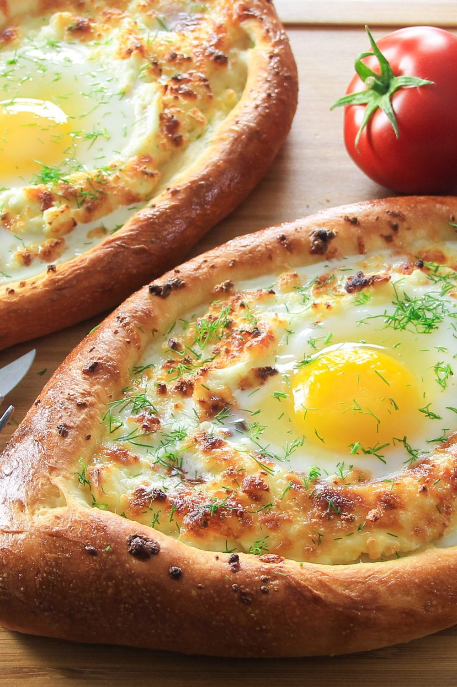

Khachapuri – Georgian Cheese Bread

What is khachapuri
- This Khachapuri recipe is also known as Georgian Cheese Bread.
Khachapuri is a warm boat-shaped yeast bread stuffed with multiple different kinds of cheese and an egg in the center.
- There are many variations of Georgian cheese bread that depend on the region and cook.
This boat-shaped kind is called khachapuri adjaruli.
for khachapuri (georgian cheese bread)
- all-purpose flour
- salt
- dry active yeast
- granulated sugar
- milk
- olive oil
- Farmers cheese
- Shredded mozzarella
- Feta cheese
- eggs
- unsalted Butter
How to make khachapuri
- Combine flour, salt, yeast, and sugar in a bowl. Then add warm milk. Using the hook attachment,
knead the dough until it takes shape. Then add oil and knead some more.
- Place the dough in a greased bowl. Cover and let it double in size.
Remove from bowl and divide the dough into 4 boat-shaped pieces.
Place the bread boast on a baking sheet lined with parchment.
- Combine the three kinds of cheese and fill each bread boat.
Using a pastry brush, brush with egg wash and bake for 15 minutes at 450 degrees Fahrenheit.
Pull the khachapuri out of the oven, then make a well in the middle. Drop the egg in the center,
add pieces of butter to the melted cheese, and bake for another 5-6 minutes.